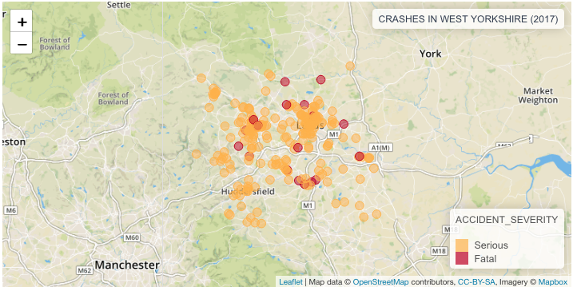
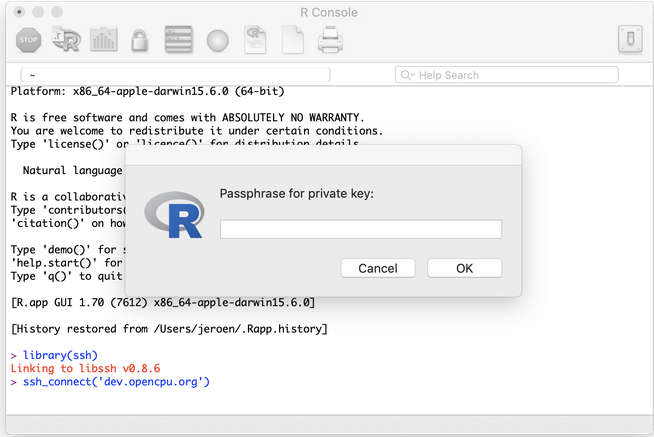
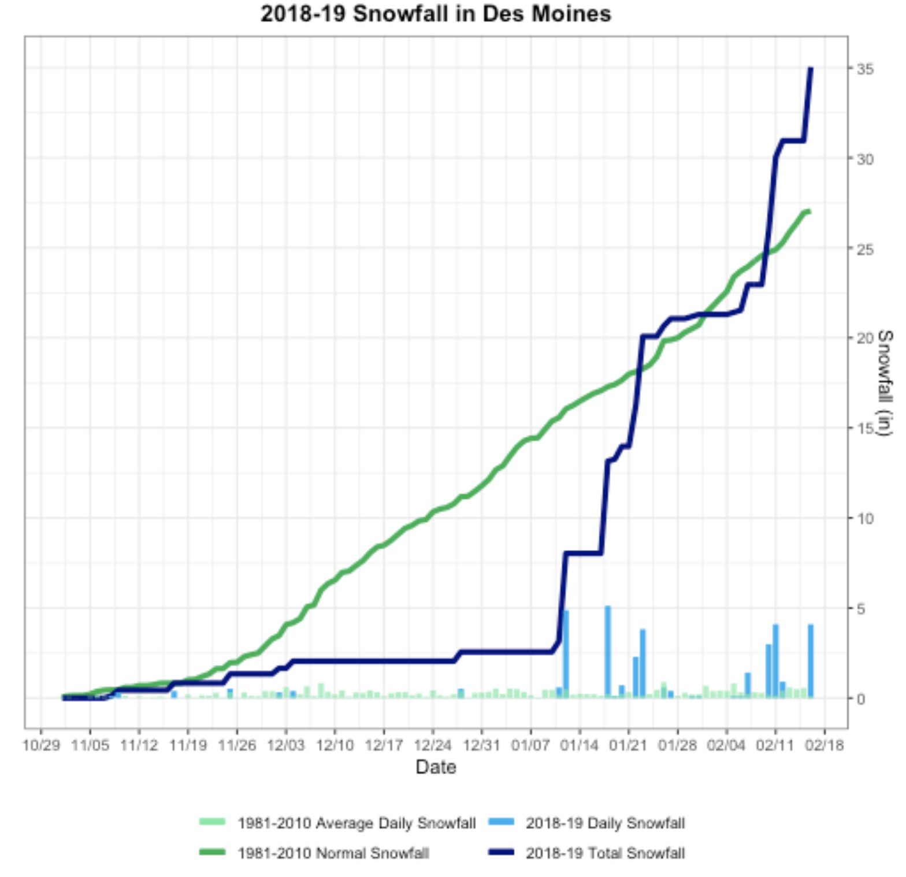

Mar 5, 2019
rOpenSci Community Calls
- We’re planning a Community Call on Research Applications of rOpenSci Taxonomy and Biodiversity Tools and we want your input! What types of questions do you try to address with these tools? How do you use the tools to address your questions? Please tell us about your examples using the template in our discussion forum UseCases category.
Software 📦
CRAN:  GitHub:
GitHub: 
New packages
- The first version (
v1.0) ofqpdfis on CRAN - Split, combine and compress PDF files. Checkout the README to get started.

- The first version (
v0.1.0) ofhandlris on CRAN - convert among citation formats. Checkout the README and rOpenSci blog post to get started. - The first version (
v0.4.1) ofRpolyhedrais on CRAN - polyhedra database from various sources as R6 objects and visualizing capabilities. (previous versions have been on CRAN, but this is the first version as an rOpenSci package). Checkout the vignette to get started.
New Versions
- A new version (
v3.0.1) ofrfishbaseis on CRAN - interface to Fishbase data. See the release notes for changes. Checkout the docs to get started. - A new version (
v2.2.1) ofbeautieris on CRAN - create BEAST2 input files programmatically. See the release notes for changes. Checkout the vignettes to get started. - A new version (
v0.9.6) ofrzmqis on CRAN - R Bindings for ZeroMQ, a lightweight messaging kernel. See the release notes for changes. Checkout the README to get started.
allow sending of long vectors; fix some rchk warnings
- A new version (
v2.0.1) oftracereris on CRAN - parse and analyze BEAST2 input files programmatically. See the release notes for changes. Checkout the vignettes to get started. - A new version (
v0.6.2) ofrdhsis on CRAN - Client for Demographic and Health Survey (DHS) Data. See the release notes for changes. Checkout the docs to get started.
duplicate labels fixed;
extraction()fix; geospatial covariate data sets now supported correctly - A new version (
v0.4.2) ofNLMRis on CRAN - Simulating neutral landscape models. See the release notes for changes. Checkout the docs to get started. - A new version (
v1.20) ofrtikais on CRAN - R Interface to Apache Tika. See the release notes for changes. Checkout the docs to get started.
updated Tika to 1.2; includes config files for OCR; workaround for
normalizePathon Windows - A new version (
v0.6.0) ofpaleobioDBis on CRAN - download and process data from the Paleobiology database. See the release notes for changes. Checkout the README to get started.
improve error reportign in
pbdb_temp_range(); fix error inpbdb_occurrences() - A new version (
v1.2.0) ofrgbifis on CRAN - interface to the Global Biodiversity Information Facility API. See the release notes for changes. Checkout the occurrence manual to get started.
elevation()fxn now uses Geonames;occ_data/occ_searchcolumn ordering changes; more WKT documentation; bug fixes - A new version (
v0.5.0) oflandscapetoolsis on CRAN - Landscape Utility Toolbox. See the release notes for changes. Checkout the docs to get started.
new interface for
util_classify; removedutil_import_roboto/util_plot_grey; new functionutil_writeESRI - A new version (
v1.0.5) ofskimris on CRAN - compact and flexible summaries of data. See the release notes for changes. Checkout the vignettes to get started.
fix mulitbyte characters issue; fix problem where purrr cannot find mean.default
- A new version (
v0.9.6) oftaxizeis on CRAN - taxonomic toolbelt for R. See the release notes for changes. Checkout the taxize book to get started.
new data source Kew POW; user agent string with all requests;
get_colidnow paginates autom.; mostget_*now try direct match; new vignette; … - A new version (
v0.999) ofgeonamesis on CRAN - interface to the Geonames spatial query web service. See the release notes for changes. Checkout the tests to get started.
base URL changed; set hostname on load instead of attach
- A new version (
v0.4) ofsshis on CRAN - Secure shell (SSH) client for R. See the release notes for changes. Checkout the vignette to get started.
fix for security problem; Windows/Mac: update libssh 0.8.6; use askpass pkg
Software Review ✔
We accept community contributed packages via our onboarding system - an open software review system, sorta like scholarly paper review, but way better. We’ll highlight newly onboarded packages here. A huge thanks to our reviewers, who do a lot of work reviewing (see the blog post on our review system), and the authors of the packages!
If you want to be a reviewer fill out this short form, and we’ll ping you when there’s a submission that fits in your area of expertise.
The following two packages recently went through our onboarding process and have been approved:
- tacmagic > PET (positron emission tomography) Analysis in R
- Author: Eric Brown
- Issue: ropensci/onboarding#280
- Reviewers:
- virtuoso > R interface to Virtuoso using ODBC
- Author: Carl Boettiger
- Issue: ropensci/onboarding#271
- Reviewers:
The following two packagess were recently submitted:
- cde > Download Water Framework Directive (WFD) data from the Environment Agency Catchment Data Explorer (CDE) website
- Author: Rob Briers
- Issue: ropensci/onboarding#284
- Reviewers: not yet assigned
- rromeo > An R Client for SHERPA/RoMEO API
- Author: Matthias Grenié
- Issue: ropensci/onboarding#285
- Reviewers: not yet assigned
On the blog
Software Review
Layik Hama and Robin Lovelace wrote a summary of their recently onboarded package stats19: stats19: a package for road safety research. In it, they describe the motivation for the package and go through a detailed run through of using the package.

Tech notes
Jeroen Ooms wrote about a Bugfix release for the ssh package in his recent rOpenSci tech note. The ssh package is a secure shell (SSH) client for R.

Scott Chamberlain wrote about a handlr: convert among citation formats in his recent rOpenSci tech note. The handlr package is a new package providing conversions among many different citation formats.
Use Cases
The following 14 works use/cite rOpenSci software:
- Joish et al. used plotly in their paper Serotonin levels and 1-year mortality in patients with neuroendocrine tumors: a systematic review and meta-analysis 1
- Wheeler et al. used plotly in their paper Evidence of a trans-kingdom plant disease complex between a fungus and plant-parasitic nematodes 2
- Liu et al. used hunspell in their paper Does the Asset Pricing Premium Reflect Asymmetric or IncompleteInformation? 3
- Maljkovic used packagemetrics in their work Modelling Influential Factors of Consumption in Buildings Connected to District Heating Systems 4
- Särkiö used tokenizers in their thesis Topic modelling of Finnish Internet discussion forums as a tool for trend 5
- Mittermeier et al. used rgbif and rebird in their paper A season for all things: Phenological imprints in Wikipedia usage and their relevance toconservation 6
- Webber & Vander Wal used spatsoc in their paper Trends and perspectives on the use of animal social network analysis in behavioural ecology: a bibliometric approach 7
- Daru et al. used rgbif in their paper Spatial overlaps between the global protected areas network and terrestrial hotspots of evolutionary diversity 8
- Aiello et al. used plotly in their paper Deep brain stimulation of the subthalamic nucleus and the temporal discounting of primary and secondary rewards 9
- Ohmer et al. used rotl in their paper Phylogenetic investigation of skin sloughing rates in frogs: relationships with skin characteristics and disease-driven declines 10
- Srivastava et al. used taxize in their paper Patterns of microsatellite distribution across eukaryotic genomes 11
- Dillen et al. used rgbif in their paper A benchmark dataset of herbarium specimen images with label data 12
- Thomsen & Sigsgaard used taxize in their paper Environmental DNA metabarcoding of wild flowers reveals diverse communities of terrestrial arthropods 13
- Fitzpatrick & Dunn used rnoaa in their paper Contemporary climatic analogs for 540 North American urban areas in the late 21st century 14
In The News
Maëlle Salmon wrote a blog post on How did Axios rectangle Trump’s PDF schedule? A try with R - using our packages pdftools and magick (maintained by Jeroen Ooms) to extract text out of PDFs.
Daniel Nüst wrote about How to increase reproducibility and transparency in your research using our package suppdata maintained by Will Pearse.
lopierra made a Shiny app using our package tabulizer
Made a simple Shiny app (https://t.co/qmjCYXe8fI) to decide what veg to plant based on soil temp. Learned to use supercool {tabulizer} package (https://t.co/KA2Xjjsul7) to extract tables from PDFs, and how to deploy on https://t.co/yjSMYtJyaf! #rstats 🍅🥕🥬
— lopierra (@lopierra) February 18, 2019
Sam Tyner wrote a blog post on Reconstructing a plot from the National Weather Service - in which she used our package rnoaa to get NOAA climate data.

Call For Contributors
Part of the mission of rOpenSci is making sustainable software that users can rely on. Some software maintainers need to give up maintenance due to a variety of circumstances. When that happens we try to find new maintainers. We’ve had three recent examples of maintainer transitions within rOpenSci:
- RSelenium: now maintained by Ju Kim
- chromer: now maintained by Paula Andrea
- qualtRics: now maintained by Julia Silge
We’ve got three packages in need of new maintainers:
- webchem: The current maintainer of webchem, Eduard Szöcs, is looking for a new maintainer. See issue #155. Do ping Eduard in that issue and/or email us at info@ropensci.org
- rsnps: The current maintainer would like to hand it over to someone with more expertise in the domain. Please get in touch with Scott if you’re interested.
- rdpla: The current maintainer would like to hand it over to someone with more expertise in the domain. Please get in touch with Scott if you’re interested.
Keep up with rOpenSci
- Mailing list: Sign up with an email address to get this newsletter sent to your inbox -> ropensci.org/#subscribe
- Alternatively, you can subscribe to this newsletter via our XML feed at https://news.ropensci.org/feed.xml or our JSON feed at https://news.ropensci.org/feed.json
- rOpenSci on Twitter: @ropensci
- The rOpenSci blog at ropensci.org/blog - you can subscribe in any RSS aggregator, or manually via https://ropensci.org/feed.xml. We also announce new blog posts on our Twitter account.
Footnotes
-
Joish, V. N., Shah, S., Tierce, J. C., Patel, D., McKee, C., Lapuerta, P., & Zacks, J. (2019). Serotonin levels and 1-year mortality in patients with neuroendocrine tumors: a systematic review and meta-analysis. Future Oncology https://doi.org/10.2217/fon-2018-0960 ↩
-
Wheeler, D. L., Scott, J., Dung, J. K. S., & Johnson, D. A. (2019). Evidence of a trans-kingdom plant disease complex between a fungus and plant-parasitic nematodes. PLOS ONE, 14(2), e0211508. https://doi.org/10.1371/journal.pone.0211508 ↩
-
Liu, Crocker H., Nowak, Adam, and Smith, Patrick S. 2018. Does the Asset Pricing Premium Reflect Asymmetric or IncompleteInformation?. Economics Faculty Working Papers Series. 5. https://researchrepository.wvu.edu/econ_working-papers/5 ↩
-
Maljkovic, D. (2019). Modelling Influential Factors of Consumption in Buildings Connected to District Heating Systems. Energies, 12(4), 586. https://doi.org/10.3390/en12040586 ↩
-
Särkiö, I. (2019). Topic modelling of Finnish Internet discussion forums as a tool for trend. M.Sc. Thesis. http://sal.aalto.fi/publications/pdf-files/tsar19_public.pdf ↩
-
Mittermeier, T. et al. 2019. A season for all things: Phenological imprints in Wikipedia usage and their relevance toconservation. PLoS Biology https://research.birmingham.ac.uk/portal/files/58082037/pbio.3000146_1.pdf ↩
-
Webber, Q. M. R., & Vander Wal, E. (2019). Trends and perspectives on the use of animal social network analysis in behavioural ecology: a bibliometric approach. Animal Behaviour, 149, 77–87. https://doi.org/10.1016/j.anbehav.2019.01.010 ↩
-
Daru, B. H., le Roux, P. C., Gopalraj, J., Park, D. S., Holt, B. G., & Greve, M. (2019). Spatial overlaps between the global protected areas network and terrestrial hotspots of evolutionary diversity. Global Ecology and Biogeography. https://doi.org/10.1111/geb.12888 ↩
-
Aiello, M., Terenzi, D., Furlanis, G., Catalan, M., Manganotti, P., Eleopra, R., … Rumiati, R. I. (2019). Deep brain stimulation of the subthalamic nucleus and the temporal discounting of primary and secondary rewards. Journal of Neurology. https://doi.org/10.1007/s00415-019-09240-0 ↩
-
Ohmer, M. E. B., Cramp, R. L., White, C. R., Harlow, P. S., McFadden, M. S., Merino-Viteri, A., … Franklin, C. E. (2019). Phylogenetic investigation of skin sloughing rates in frogs: relationships with skin characteristics and disease-driven declines. Proceedings of the Royal Society B: Biological Sciences, 286(1896), 20182378. https://doi.org/10.1098/rspb.2018.2378 ↩
-
Srivastava, S., Avvaru, A. K., Sowpati, D. T., & Mishra, R. K. (2019). Patterns of microsatellite distribution across eukaryotic genomes. BMC Genomics, 20(1). https://doi.org/10.1186/s12864-019-5516-5 ↩
-
Dillen, M., Groom, Q., Chagnoux, S., Güntsch, A., Hardisty, A., Haston, E., … Phillips, S. (2019). A benchmark dataset of herbarium specimen images with label data. Biodiversity Data Journal, 7. https://10.3897/bdj.7.e31817 ↩
-
Thomsen, P. F., & Sigsgaard, E. E. (2019). Environmental DNA metabarcoding of wild flowers reveals diverse communities of terrestrial arthropods. Ecology and Evolution. https://doi.org/10.1002/ece3.4809 ↩
-
Fitzpatrick, M. C., & Dunn, R. R. (2019). Contemporary climatic analogs for 540 North American urban areas in the late 21st century. Nature Communications, 10(1). https://doi.org/10.1038/s41467-019-08540-3 ↩